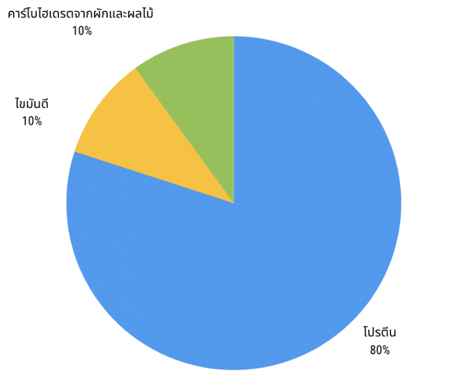

เมื่อพูดถึงสุขภาพที่ดี ก็จะหนีไม่พ้นเรื่องการลดน้ำหนัก ซึ่งเป็นเรื่องที่หลายคนให้ความสนใจ การลดน้ำหนักในปัจจุบันนี้มีหลากหลายวิธีให้เลือกอย่างมากมาย มากจนบางครั้งคุณเองก็ไม่รู้ว่าจะเริ่มจากวิธีไหนดี วันนี้เราจะมาสรุปแนวทางและเปรียบเทียบแต่ละวิธีการ เพื่อให้เห็นว่าวิธีลดน้ำหนักแบบไหนเหมาะสมกับคุณ จะได้ช่วยในการตัดสินใจและได้เริ่มลงมือลดน้ำหนักได้ไวขึ้น จะได้ผอม หุ่นเป๊ะ ในเร็ววัน
ก่อนอื่นคุณต้องพิจารณาความต้องการของคุณก่อน เพราะว่าการลดน้ำหนักแต่ละวิธีก็ไม่ได้เหมาะกับทุกๆคน เพราะฉะนั้นคุณควรพิจารณาจากความชอบ ไลฟ์สไตล์ และเป้าหมายในการลดน้ำหนักของคุณ คุณก็จะพบแนวทางการลดน้ำหนักที่คุณสามารถปรับให้เข้ากับความต้องการของคุณได้ ก่อนเริ่มลดน้ำหนักให้นึกถึง 4 ข้อต่อไปนี้
คุณเคยลองอาหารเหล่านั้นบ้างหรือยัง คุณชอบอาหารประเภทนี้หรือไม่? คุณสามารถทานอาหารตามแนวทางนั้นได้หรือไม่? เมื่อทานอาหารเหล่านั้น ร่างกายและอารมณ์ของคุณรู้สึกอย่างไร?
คุณชอบลดน้ำหนักด้วยตัวเองหรือต้องการการเข้ากลุ่มเพื่อกระตุ้นการอยากลดน้ำหนัก? เช่น เข้ายิม จ้างเทรนเนอร์ หรือเข้าร่วมกลุ่มคนอยากลดน้ำหนัก หากคุณชอบการเข้าร่วมกลุ่ม ก็มีทั้งแบบทางออนไลน์หรือเจอแบบตัวต่อตัว แบบไหนที่เหมาะกับคุณ?
การลดน้ำหนักบางแนวทางก็ต้องซื้ออาหาร เครื่องปรุงต่างๆที่จำเพาะเจาะจง และแนวทางนั้นอาจจะต้องเพิ่งอาหารเสริมมาทดแทนสารอาหารที่ขาดไป
คุณมีภาวะทางด้านสุขภาพ เช่นโรคเบาหวาน โรคหัวใจ หรือโรคภูมิแพ้หรือไม่
การลดน้ำหนักแบบ คีโตเจนิค ไดเอท (Ketogenic Diet) หรือที่เรียกกันว่า คีโต ไดเอท (Keto Diet) จะเน้นการกินไขมัน กินไขมันแล้วน้ำหนักเราก็ยิ่งลด ฟังแล้วงงใช่มั๊ยล่ะ มาดูรายละเอียดกันดีกว่าว่าเป็นอย่างไรบ้าง
คีโต ไดเอท (Keto Diet) รูปภาพจาก bestreview.asia
การทานอาหารแบบ Keto เน้นไขมัน 75% โปรตีน 20% คาร์โบไฮเดรตจากผัก 5% เป็นการทานแบบ low-carb, high-fat (LCHF )
อาหารต้องห้าม จะเป็นอาหารที่มีคาร์โบไฮเดรตและน้ำตาลสูง เช่น ข้าว, เส้นก๋วยเตี๋ยว, ผลไม้บางชนิด, เครื่องดื่มผสมน้ำตาลต่างๆ รวมถึงอาหารแปรรูปที่มีส่วนผสมของแป้ง เช่น ไส้กรอก หรือลูกชิ้น เป็นอาหารต้องห้ามใจ เมื่อลดน้ำหนักแนวทางคีโตนะคะ
การจำกัดปริมาณคาร์โบไฮเครตให้ และเน้นทานอาหารที่มีไขมัน จะทำให้ร่างกายเข้าสู่โหมดคีโคสีส (Ketosis) และดึงไขมันมาเป็นแหล่งพลังงานหลัก นั่นทำให้ตับผลิตสารคีโตนขึ้นมา ซึ่งก็จะถูกนำไปใช้เป็นพลังงานของร่างกายด้วยเช่นกัน
การทานแบบคีโตไดเอทอาจทำให้ร่างกายเสียสมดุล และอาจจะมีปัญหาในภายหลังได้หากทานเป็นระยะยาว อาจเป็นโรคขาดสารอาหารได้ รวมถึงอาจทำให้อวัยวะภายในทำงานผิดปกติ เนื่องจากได้รับสารอาหารไม่ครบหมู่ตามหลักโภชนาการ มีกลิ่นปาก การขับถ่ายผิดปกติได้
คนที่อยากลดน้ำหนักอย่างรวดเร็ว คนที่ชอบทานอาหารติดไขมัน ไม่ชอบคำนวณแคลอรี่ ไม่มีโรคประจำตัวใด ๆ และไม่เหมาะกับบุคคลที่ทำงานแบบใช้พลังงานมากนะคะ เนื่องจากในระยะแรกอาจทำให้ร่างกายอ่อนเพลีย รวมถึงเกิดภาวะบางอย่างขึ้นจากการปรับตัวของร่างกายนั่นเองค่ะ
การลดน้ำหนักแบบกินคีโตไม่เหมาะสำหรับผู้ป่วยโรคเบาหวาน ที่ต้องฉีดอินซูลิน, ผู้ป่วยโรคความดัน และ ผู้ป่วยที่มีไขมันในเลือดสูงผิดปกติ
แน่นอนค่ะว่าการลดน้ำหนักแบบกินคีโตจะมีค่าอาหารที่เพิ่มขึ้น เนื่องการทานอาหารแบบคีโต จะเน้นการทานไขมันดี ซึ่งแหล่งไขมันดี อย่างเช่น น้ำมันมะกอก, อะโวคาโด, เนย, และน้ำมันมะพร้าว สำหรับผลไม้ที่ทานได้ก็จะเป็นผลไม้ตระกูลเบอร์รี่ ซึ่งราคาค่อนข้างราคาสูง
ในปี 1963 Dr. Robert C. Atkins แพทย์โรคหัวใจชาวอเมริกันได้ศึกษางานวิจัยของเขาได้สำรวจทฤษฎีที่ว่าการตัดแป้งและน้ำตาลออกจากอาหารอาจทำให้น้ำหนักลดลงได้ดีอย่างมาก โดยรายละเอียดของการลดน้ำหนักแบบแอตกินส์ ไดเอตจะมีอะไรบ้างมาดูกันค่ะ

Atkins Diet หรือ แอตกินส์ ไดเอต รูปภาพจาก bestreview.asia
การทานอาหารแบบ Atkins เน้นโปรตีน 80% ไขมันดี 10% คาร์โบไฮเดรตจากผักและผลไม้ 10% แนะนำให้คุณทานโปรตีนเสริมที่ทานได้ง่ายโดยไม่ต้องฝืน อย่าง ผงเวย์โปรตีน ที่สามารถชงใส่ในเมนูเครื่องดื่มผักและผลไม้ของคุณได้ง่าย ๆ
ปริมาณคาร์โบไฮเดรตที่รับประทานนั้นต้องให้น้อยกว่า 40 กรัมต่อวัน จะทำให้ร่างกายเข้าสู่ภาวะ Ketosis ซึ่งร่างกายจะนำไขมันมาใช้เป็นพลังงานแทน ภาวะนี้จะส่งผลต่อการผลิตอินซูลินของร่างกาย ซึ่งจะช่วยป้องกันไม่ให้เกิดการสะสมของไขมันเพิ่มขึ้น และเมื่อร่างกายเข้าสู่ภาวะ Ketosis แล้วนั้น ร่างกายจะสามารถใช้ไขมันเป็นพลังงานหลักได้อย่างมีประสิทธิภาพ ภาวะในการโหยอาหารประเภทคาร์โบไฮเดรตก็จะลดลงด้วย
หากลดน้ำหนักด้วยวิธีนี้เป็นเวลานานอาจทำให้เกิดผลเสียในระยะยาวได้ อาจทำให้ขาดสารอาหารได้ มีกลิ่นปากและปากแห้ง อาการท้องผูกและปัญหาเกี่ยวกับลำไส้ที่อาจเกิดขึ้นเนื่องจากได้รับไฟเบอร์น้อย
แนะนำให้ทานเป็นเครื่องดื่มระบายท้องหรืออาหารเสริมไฟเบอร์ที่จะช่วยแก้ปัญหาเกี่ยวกับระบบขับถ่าย อย่าลืมตรวจสอบปริมาณของน้ำตาลที่อาจจะใส่มาในผลิตภัณฑ์ด้วยนะคะ
คนที่อยากลดน้ำหนักอย่างรวดเร็ว คนที่ชอบทานอาหารที่เน้นเนื้อสัตว์ ไม่ชอบคำนวณแคลอรี
เนื่องจากการทานอาหารแบบ Atkins ปริมาณที่สามารถทานคาร์โบไฮเดรตต่ำมาก จึงไม่เหมาะกับทุกคน
ค่าอาหารที่ในการทานแบบ Atkins ก็ค่อนข้างสูง แต่เราก็มีทางเลือกในการทานโปรตีนที่มีราคาเป็นมิตรอย่างไข่ หรือเนื้อสัตว์ราคาถูก (แนะนำเครื่องต้มไข่ไฟฟ้าที่จะช่วยให้คุณใช้ชีวิตได้ง่ายขึ้น)
Paleo Diet คือ การลดน้ำหนักแบบมนุษย์ดึกดำบรรพ์ เน้นทานอาหารที่คนในสมัยก่อนจะสามารถหากินได้ เหมือนกับว่าเราได้พาตัวเองนั่งไทม์แมชชีนกลับไปสมัยยังใช้ถ้ำต่างที่อยู่อาศัยกันเลย อาหาร Paleo เน้นอาหารที่มีโปรตีน เช่นเนื้อสัตว์ ปลา ผัก และผลไม้ และ แต่ห้ามธัญพืชและนม เรามาดูรายละเอียดกันดีกว่าค่ะว่ามีอะไรบ้าง
Paleo Diet รูปภาพจาก bestreview.asia
การทานอาหารแบบ Paleo เน้นอาหารที่มีโปรตีนที่ติดไขมันน้อยๆ 50% ผัก 25% และผลไม้ 25% ส่วนอาหารแปรรูป น้ำตาล นม และธัญพืช ต้องห่างกันสักพักนะคะเมื่อเข้าสู่วงการ Paleo
จากการศึกษาจํานวนมากพบว่าการทานอาหารตามแนวทาง Paleo สามารถช่วยลดน้ําหนักและลดไขมันได้เป็นอย่างดี เพราะการรับประทานอาหารประเภทผักผลไม้ เนื้อสัตว์ติดมันน้อยๆ ไข่ รวมไปถึงอาหารสดจากทะเล จะมีประโยชน์ต่อสุขภาพและร่างกาย
นอกจากช่วยควบคุมน้ำหนักแล้ว ยังช่วยคุมระดับน้ำตาลในเลือด ควบคุมความดันของโลหิต และลดระดับไขมันไตรกลีเซอไรด์ในเลือดได้ ที่สำคัญยังช่วยลดความอยากอาหารได้อีกด้วย
การทานอาหารแบบ Paleo จะห้ามทานธัญพืช พืชตระกูลถั่ว และผลิตภัณฑ์นมซึ่งมีคุณค่าทางโภชนาการ ดังนั้นคุณอาจจะขาดสารอาหารเช่นวิตามินดี แคลเซียม เป็นต้น
คนที่อยากลดน้ำหนักอย่างรวดเร็ว คนที่สามารถทานอาหารแบบไม่ผ่านการปรุงแต่ง
วิธีนี้ไม่เหมาะสำหรับคนที่เป็นโรคเบาหวาน เพราะจะต้องตัดแป้ง น้ำตาล นม เนย อาจจะทำให้ระดับน้ำตาลตกได้ และหากคุณเป็นคนทานอาหารมังสวิรัติ เนื่องจากอาหารส่วนใหญ่คือเนื้อสัตว์ ส่วนแหล่งโปรตีนที่ผู้ทานมังสวิรัติทานได้ เช่น ถั่วเหลือง และพืชมีฝัก ผู้ที่ทานอาหารแบบ Paleo ก็ไม่สามารถทานได้
ค่าอาหารที่เพิ่มขึ้น เนื่องการทานอาหารแบบ Paleo จะเน้นการทานเนื้อสัตว์ออร์แกนิคที่เลี้ยงด้วยหญ้า
IF คือการกินแบบมีรูปแบบ (Pattern) โดยกำหนดช่วงกินอาหาร (eating) และ อดอาหาร (fasting) ซึ่งไม่ได้กำหนดชนิดของอาหารว่าต้องทานอะไรเป็นพิเศษ แต่กำหนดช่วงระยะเวลาในการกิน ซึ่งมีอะไรที่ต้องทำและอะไรที่ต้องระวังบ้างมาดูกันค่ะ
Intermittent Fasting (IF) รูปภาพจาก bestreview.asia
บางคนเรียกวิธีนี้ว่า Leangains คือการกินอาหาร 8 ชั่วโมง และ อดอาหาร 16 ชั่วโมง วิธีนี้เป็นวิธีที่ได้รับความนิยมแพร่หลาย ด้วยเหตุผลที่ว่าสามารถทำได้อย่างยั่งยืน คุณยังคงทานอาหารที่คุณกินอย่างปกติได้ แต่หากปรับให้มีความเหมาะสมต่อสุขภาพก็จะดีขึ้นมากเลย
แม้ว่าคุณจะสามารถทานอาหารได้อย่างปกติ แต่เพื่อประสิทธิภาพที่ดียิ่งขึ้น เราแนะนำให้คุณทานอาหารที่มีแคลต่ำ รวมถึงเครื่องดื่มที่สามารถดื่มได้ในช่วงที่อดนั้นควรจะเป็นเครื่องไม่มีแคลหรือไม่ใส่น้ำตาล อาทิเช่น กาแฟดำ, ชาดำ, ชาสมุนไพร หรือ ผงชาเขียวมัทฉะ เป็นต้น
เนื่องจากเราลดประมาณแคลอรี่ลง ผลการศึกษาพบว่าเมื่อทำ IF ติดต่อกัน 3-24 สัปดาห์ จะทำให้น้ำหนักตัวลดลง 3-8% IF ยังช่วยให้การเผาผลาญไขมันในร่างกายได้ดีขึ้น โดยช่วงที่เราอดอาหาร (Fasting) ระดับอินซูลินจะลดลง ระดับ Growth Hormone สูงขึ้น จึงทำให้ร่างกายหลั่งฮอร์โมนที่มาช่วยเผาผลาญไขมัน นี่ก็เท่ากับว่าเรากินน้อยลงและเพิ่มการเผาผลาญแคลอรี่ได้มากขึ้นอีกด้วย การอดอาหารระยะสั้นๆสลับกันไปนี้แบบนี้ จะช่วยเพิ่มอัตราการเผาผลาญของร่างกายได้ 3.6-14% เลยทีเดียว ซึ่งยังช่วยลดไขมันสะสมรอบเอว (Belly fat) ลงด้วย
ในช่วงแรกอาจมีอาการอ่อนล้า และสมองทำงานไม่ดีเท่าที่ควร แต่อย่ากังวล เพราะเป็นอาการชั่วคราว จะมีอาการเพียงแค่ไม่กี่วันของการเริ่มต้นทำ IF
คนที่อยากลดน้ำหนักในระยะยาว รวมทั้งคนที่เสี่ยงต่อการเป็นโรคเบาหวานประเภท 2 เหมาะกับคนที่ไม่ชอบมื้อเช้า หรือทำงานที่ต้องตื่นสาย หรือสำหรับคนที่ลดน้ำหนักแบบอื่นแล้วน้ำหนักค้าง การทำ IF ร่วมก็จะช่วยให้ลดน้ำหนักให้ลงมาอีกได้ด้วย
ถ้าคุณมีปัญหาเกี่ยวกับภาวะน้ำตาลในเลือดการทานแบบ IF จะไม่เหมาะกับคุณ
การลดน้ำหนักด้วยวิธีการ IF ไม่มีผลต่อกระเป๋าตังส์คุณเลย เพราะคุณจะทานอะไรก็ได้ ทั้งนี้ทั้งนั้นคุณก็ต้องกินให้เป็นปกติ อย่าเพิ่มปริมาณอาหารไปทดแทนมื้อที่ไม่ได้กินไป และมื้ออาหารของคุณควรครบหมวดหมู่ของการทานอาหารที่ดี
อีกทางเลือกหนึ่งในการลดน้ำหนัก คือ วิธีการนับแคลอรี่ โดยการนับแคลอรี่ของอาหารที่เราทานเข้าไป เพื่อกำหนดไม่ให้เกิดพลังงานส่วนเกินจนสะสมกลายเป็นไขมัน คนปกติสามารถรับแคลอรี่ได้ประมาณ 1800-2300 กิโลแคลอรี่ แต่สำหรับคนที่ต้องการลดน้ำหนักต้องมีลดปริมาณแคลอรี่เพื่อให้ร่างกายได้รับน้อยกว่าปกติ ซึ่งก่อนจะลดความอ้วนด้วยวิธีนี้ควรคำนวณหาค่า BMR (จำนวนแคลอรี่ที่ร่างกายต้องการในแต่ละวัน) และ TDEE (ปริมาณการใช้พลังงานของแต่ละคน) ซึ่งจะมีรายละเอียดดังนี้
ส่วนวิธีการคำนวณค่า TDEE หรือ Total Daily Energy Expenditure อันนี้จะคำนวณตาม
กิจกรรมและไลฟ์สไตส์ของแต่ละคน
สำหรับคนที่ต้องการลดน้ำหนัก ควรรับแคลอรี่ให้ต่ำกว่าค่า TDEE โดยแนะนำให้นำค่า TDEE ลบออก 500 (TDEE – 500) จะได้ค่าแคลอรี่ที่เราต้องกินในแต่ละวัน
การนับแคลเมื่อคุณได้ปริมาณแคลอรี่ที่สามารถทานได้ในแต่ละวันแล้ว การนับแคลอรี่ ไม่ใช่แค่ดูที่พลังงานแคลอรี่อย่างเดียว แต่ต้องดูคุณภาพของอาหารที่เราทานด้วย ควรงดอาหารที่มีแคลอรี่สูงและมีโภชนาการต่ำ
แนะนำเมนูอาหารคลีนและเมนูอาหารเช้าแคลอรี่ต่ำที่ใครก็สามารถทำได้ง่าย ๆ โดยอาศัยเครื่องปรุงอาหารคลีนเป็นตัวช่วยในการจำกัดปริมาณโซเดียมและน้ำตาล รวมถึงในบทความนี้ยังมีรายการอาหารที่ควรกินและไม่ควรกินหากคุณต้องการลดน้ำหนักบอกไว้เป็นแนวทางให้คุณอีกด้วยนะคะ
โดยการนับแคลอรี่ของอาหารที่เราทานเข้าไป เพื่อกำหนดไม่ให้เกิดพลังงานส่วนเกินจนสะสมกลายเป็นไขมัน คือเป็นการให้ร่างกายเราใช้พลังงานมากกว่าที่ทานไป
ต้องชั่งตวงอาหารทุกอย่าง แล้วนำมาคำนวณเป็นพลังงานแคลอรี่ออกมา ค่อนข้างยากสำหรับบางคน เพราะว่าอาจจะยุ่งยาก ,รู้สึกหิว, อ่อนเพลีย
เหมาะสำหรับผู้ทีมีไลฟ์สไตค์เบาๆ เช่น พนักงานออฟฟิต หรือคนที่ทำงานนั่งหน้าคอมทั้งวัน อ่านและวิเคราะห์ข้อมูล แม่บ้าน เป็นต้น
การลดน้ำหนักแบบนับแคลอรี่ไม่มีผลต่องบประมาณสักเท่าไหร่นัก เนื่องจากค่อนข้างยืดหยุ่นในส่วนของอาหารการกิน ควรเน้นอาหารที่มีแคลอรีต่ำและมีโภชนาการสูง
วิธีนี้ คือการทานตามแบบที่คนตามชายฝั่งเมดิเตอร์เรเนียน เช่น กรีซ อิตาลีตอนใต้ และสเปน ทานกัน เรามาดูกันค่ะว่าเขาทานอะไรกันบ้าง
Mediterranean diet รูปภาพจาก bestreview.asia
อาหารของชาวเมดิเตอร์เรเนียนจะเน้นผัก ผลไม้ และธัญพืชเป็นหลัก ตามด้วยผลิตภัณฑ์จากนมอย่างชีสไขมันต่ำ ในส่วนของเนื้อสัตว์จะเน้นสัตว์ปีก อาหารทะเลโดยเน้นปลา เนื้อแดงแทบไม่รวมอยู่ในสูตรนี้เลย และไขมันไม่อิ่มตัวอย่าง น้ำมันมะกอกและน้ำมันคาโนล่านั่นเอง
เนื่องจากเป็นวิธีที่ต้องทานผักและผลไม้ในปริมาณที่สูงกว่าวิธีลดน้ำหนักอื่น ๆ แนะนำให้คุณเลือกซื้อผักและผลไม้แบบออร์แกนิค หรือหากคุณไม่หมั่นใจผักและผลไม้ที่ซื้อมา คุณควรจะล้างผักและผลไม้ให้สะอาดก่อนรับประทานด้วยวิธีที่ถูกต้อง และอาจจะใช้ผลิตภัณฑ์สำหรับล้างผักและผลไม้โดยเฉพาะ เพื่อป้องกันไม่ให้ร่างกายรับสารเคมีจากผักและผลไม้เหล่านั้น
ผู้ที่อาศัยอยู่ในแถบตอนใต้ของทะเลเมดิเตอร์เรเนี่ยนมีอัตราการเป็นโรคหัวใจ ความดันโลหิตสูง คอเลสเตอรอลสูง ได้น้อยกว่าผู้ที่อาศัยอยู่ทางตะวันตกนั่นอาจเป็นเพราะว่าพวกเขาไม่ค่อยได้ทานอาหารที่มีไขมันอิ่มตัวสูง นอกจากนี้อาหารเมดิเตอร์เรเนียนยังเป็นอาหารที่อร่อย หากคุณต้องการใช้สูตรนี้เพื่อลดน้ำหนักคุณต้องควบคุมปริมาณอาหารในแต่ละมื้ออย่างเคร่งครัดจึงจะเห็นผล ตัวอย่างเช่นการวิเคราะห์การศึกษา 19 การศึกษาพบว่าคนที่ทานอาหารแบบเมดิเตอร์เรเนียนและออกกําลังกายควบคู่ไปด้วยจะช่วยในการลดน้ำหนักได้
การทานอาหารแบบเมดิเตอร์เรเนียน เป็นการลดน้ำหนักแบบค่อยเป็นค่อยไป ในช่วงแรกๆ อาจจะมีความอยากทานเนื้อแดงมาก บางคนอาจจะไม่สามารถทําได้ในระยะยาว
คนที่อยากลดน้ำหนักอย่างอย่างยั่งยืนและค่อยเป็นค่อยไป คนที่ชอบทานอาหารที่เน้นผักและผลไม้ ไม่ชอบคำนวณแคลอรี และคนที่ไม่สามารถตัดแอลกอฮอล์ออกจากมื้ออาหารได้ เพราะการทานอาหารแบบเมดิเตอร์เรเนียน คุณสามารถดื่มไวน์ในมื้ออาหารได้ ในปริมาณที่เหมาะสม
จากผลการศึกษาของ USDA (United States Department of Agriculture) พบว่าการทานอาหารแบบเมดิเตอร์เรเนียนนี้จะทำให้ระดับแคลเซียมและวิตามินดีต่ำลง เนื่องจากดื่มนมน้อยลง การทานคาร์โบไฮเดรตที่มีปริมาณมาก ถึงแม้ว่าจะเป็นคาร์โบไฮเดรตเชิงซ้อนที่มี GI ต่ำ แต่หากทานมากเกินไปโดยมาได้นับแคลอรี่ ก็ทำให้น้ำหนักขึ้นได้
อาหารทะเลราคาแพงกว่าเนื้ออื่นๆ ส่วนประกอบของอาหารแบบเมดิเตอร์เรเนียนอาจฟังดูแล้วหนักไปทางฝรั่งมากกว่าอาหารไทย แต่จริงๆ แล้วแนวคิดของเมดิเตอร์เรเนียน คือการเน้นทานอาหารจากแหล่งวัตถุดิบในท้องถิ่นนั้นๆ ดังนั้นสำหรับคนไทยก็สามารถดัดแปลงเลือกทานอาหารที่หาได้ใกล้บ้าน เช่น เนื้อไก่ลอกหนัง แกงจืดผักกาดขาว ทานกับข้าวกล้อง น้ำพริก (ปรุงรสไม่จัดมากจนเกินไป) ทานคู่กับผักสด เป็นต้น
* ความยืดหยุ่นและงบประมาณ ขึ้นอยู่กับแต่ละบุคคล
กุญแจสู่ความสําเร็จในการลดน้ำหนักของแต่ละคนก็แตกต่างกันไป ต้องดูให้เหมาะสมกับตัวคุณเอง สามารถทำได้ในระยะยาว ยั่งยืน เข้ากับนิสัยการกินของคุณ งบประมาณ และคุณควรออกกําลังกายด้วย เพราะการลดน้ำหนักร่างกายอาจเสียกล้ามเนื้อไปบ้าง หวังว่าคุณจะได้ไอเดียรูปแบบการลดน้ำหนักไปบ้างแล้ว แต่ไม่ว่าคุณจะลดด้วยวิธีใดควรปรึกษาแพทย์ก่อนด้วยเสมอนะคะ เพราะย้ำเสมอว่าไม่ใช่ว่าการลดน้ำหนักทุกรูปแบบจะเหมาะกับทุกคน ขอให้ผอมกันเร็วไวนะคะ
ขอบคุณข้อมูลจาก : https://bestreview.asia/how-to/weight-loss-comparisons/